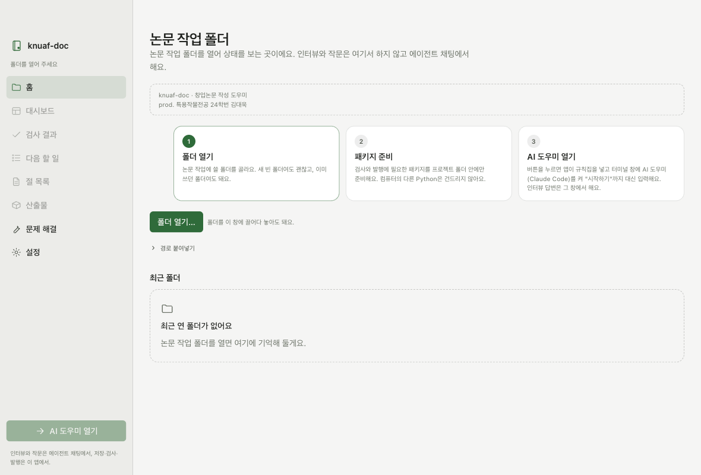
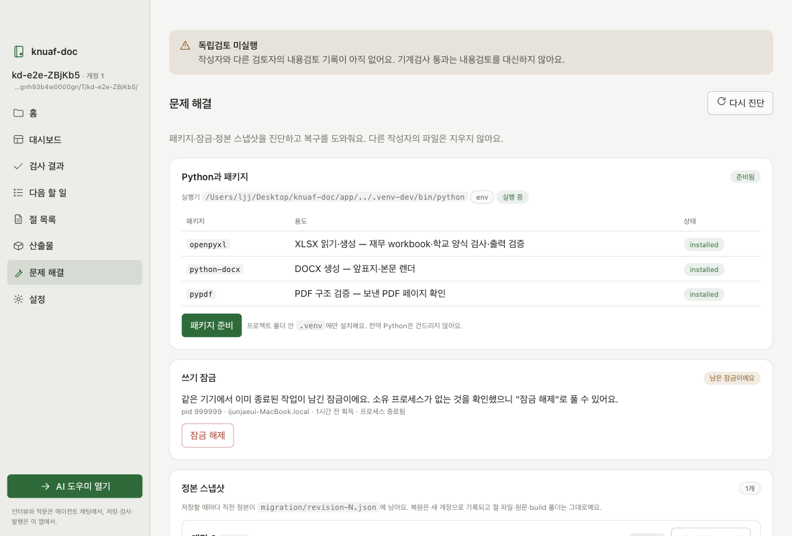
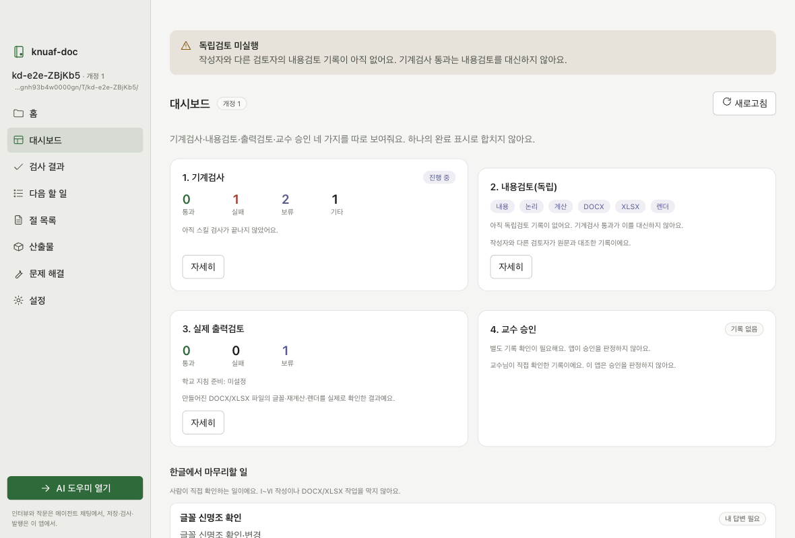
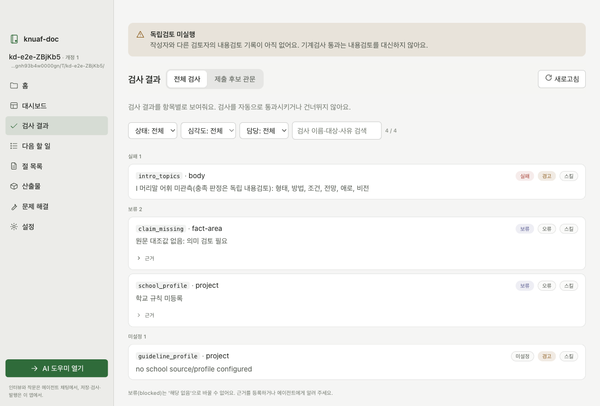
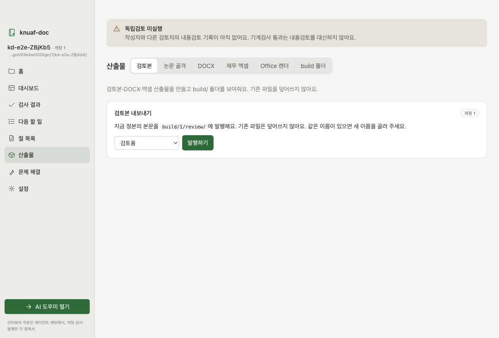

knuaf-doc 동반 앱 사용 안내 (학생용)
논문은 AI 도우미가 채팅으로 인터뷰하며 써요. 이 앱은 그 옆에서 저장 상태와 검사 결과를 보여 주고, 버튼으로 산출물을 만들어요.
1. 이 툴은 무엇인가요
먼저 이것만은 꼭 알아 두세요.
- 논문을 쓰는 건 AI 도우미(Claude Code)예요. 도우미가 채팅으로 질문하고, 답을 들으며 논문을 써요. 인터뷰 답변도 채팅에서 해요.
- 이 앱은 논문을 쓰지 않아요. 도우미가 저장한 내용을 읽어서 저장 상태, 검사 결과, 다음 할 일, 만들어진 파일을 보여 줘요. 검사와 발행, 복구는 버튼으로 실행해요.
- 그래서 창을 두 개 같이 써요. 이 앱 창 하나, AI 도우미 창 하나예요. 앱 안에서 전부 되는 게 아니에요.
- 명령어나 JSON은 몰라도 돼요.
2. 준비물
- Mac — 이 앱은 macOS용이에요.
- Microsoft Word, Excel (선택) — 최종 문서를 실제로 열어 보고 렌더할 때 써요. 없어도 논문 쓰기는 돼요.
- Claude 계정 — Pro, Max 같은 유료 요금제가 필요해요. 무료 계정으로는 Claude Code를 쓸 수 없어요.
- Claude Code 설치 — 앱이 없으면 앱이 설치 안내를 띄워요. https://claude.ai/code 에서 설치하거나, 터미널에서
curl -fsSL https://claude.ai/install.sh | bash한 줄을 실행해요.
3. 설치
knuaf-doc Companion-….dmg를 열어요.- 앱을 응용 프로그램 폴더로 끌어다 놓아요.
4. 처음 실행
앱은 아직 Apple 서명이 없어서 처음에는 "열 수 없음"이라고 나올 수 있어요.
- macOS 14 이하: 응용 프로그램에서 앱을 오른쪽 클릭 → 열기 → 열기.
- macOS 15 이상: 한 번 실행을 시도한 뒤 시스템 설정 → 개인정보 보호 및 보안 맨 아래에서 그래도 열기.
두 번째부터는 그냥 실행하면 돼요.

5. 폴더 열기
홈에서 폴더 열기… 를 누르고 논문 작업 폴더를 골라요. 새 빈 폴더도 괜찮고, 이미 쓰던 폴더도 괜찮아요.
최근에 연 폴더는 홈에 카드로 남아요.
6. 패키지 준비 (한 번만)
문제 해결 화면에서 패키지 준비를 눌러요. 검사와 발행에 필요한 Python 패키지를 논문 폴더 안 .venv에만 설치해요.
컴퓨터의 다른 Python은 건드리지 않아요. 인터넷이 없어도 앱 안에 들어 있는 패키지로 설치돼요.

7. AI 도우미 열기
홈에서 AI 도우미 열기 버튼을 눌러요. 그러면 앱이 이렇게 해요.
- 규칙집을 도우미가 읽는 자리(내 계정의 Claude 설정 폴더)에 자동으로 설치해요. 도우미가 논문을 어떤 순서와 형식으로 쓸지 적힌 파일이에요. 내 자료는 옮기지 않아요.
- 터미널 창을 열고 AI 도우미를 켜요.
- "시작하기" 를 대신 입력해요. 인터뷰가 바로 시작돼요.
처음이면 브라우저에 Claude 로그인 창이 떠요. 로그인하면 돼요.
이후 답변은 모두 그 터미널 창에서 해요. 이 앱은 답을 받지 않아요. 그래야 인터뷰 기록이 채팅에 그대로 남아요.
도우미가 저장할 때마다 이 앱의 대시보드와 검사 결과가 새로 바뀌어요.
8. 화면 안내
| 화면 | 보여 주는 것 |
|---|---|
| 홈 | 폴더 열기, 최근 폴더, AI 도우미 열기, 시작 단계 |
| 대시보드 | 기계검사 · 내용검토 · 실제 출력검토 · 교수 승인, 네 가지를 따로. 한글에서 마무리할 일 |
| 검사 결과 | 검사 하나하나의 통과/실패/보류와 사유 |
| 다음 할 일 | 내 답변이 필요한 일, 근거가 필요한 일, 진행 가능한 일 |
| 절 목록 | 등록된 절과 본문 미리보기(읽기 전용) |
| 산출물 | 검토본 내보내기, 논문 골격, DOCX, 재무 엑셀, Office 렌더, build 폴더 |
| 문제 해결 | 패키지, 잠금, 정본 스냅샷, 남은 임시 파일, 문서 읽기 도구 |
| 설정 | Python 실행기(고급), 최근 폴더 지우기, 로그 |

독립검토 미실행 띠가 맨 위에 보이면, 아직 작성자와 다른 사람이 내용을 검토한 기록이 없다는 뜻이에요. 기계검사 통과와는 별개예요.


9. 막혔을 때
- "다른 작업이 이 폴더를 잠그고 있어요" — 도우미가 저장 중이면 잠깐 기다려요. 아무것도 안 돌고 있는데 계속 그러면 문제 해결 → 쓰기 잠금에서 상태를 보고, "남은 잠금"이면 잠금 해제를 눌러요. 다른 컴퓨터의 잠금이거나 아직 살아 있는 작업의 잠금은 앱이 풀지 않아요.
- 정본이 꼬였을 때 — 문제 해결 → 정본 스냅샷에서 이전 개정으로 복원할 수 있어요. 복원 전에 지금 상태를 먼저 저장해 두니 되돌릴 수 있어요. 절 파일과 만들어진 문서는 그대로예요.
- "필요한 패키지가 아직 준비되지 않았어요" — 6번의 패키지 준비를 해요.
- 도우미 창을 닫아 버렸을 때 — 홈에서 AI 도우미 열기를 다시 눌러요. 이전 대화를 이어갈 수 있어요.
- 오류 메시지의 자세히를 열어 그 내용을 도우미에게 붙여 넣으면 대부분 해결돼요.
10. 이 앱이 절대 하지 않는 것
- 인터뷰 답변을 받지 않아요. (도우미 창에서만)
- 논문 본문을 편집하지 않아요. (읽기 전용 미리보기만)
- 만든 파일을 덮어쓰지 않아요. 같은 이름이 있으면 새 이름을 제안해요.
- 다른 사람의 파일을 지우지 않아요.
- 교수 승인을 판정하지 않아요.
- 아무것도 컴퓨터 밖으로 보내지 않아요.
11. 자주 묻는 질문
앱만으로 논문이 되나요?
아니요. 논문은 AI 도우미가 채팅으로 인터뷰하며 써요. 이 앱은 그 결과를 보여 주고 검사와 발행을 도와요. 두 창을 같이 써야 해요.
인터넷이 필요한가요?
AI 도우미는 필요해요. 앱 자체는 인터넷 없이도 돼요. 검사, 산출물 만들기, 복구는 모두 내 Mac 안에서 돌아가요.
내 자료가 어디로 가나요?
이 앱은 아무것도 밖으로 보내지 않아요. AI 도우미는 대화 내용을 Anthropic 서비스에 보내요. 인터뷰에서 말한 내용과 도우미가 읽은 파일이 여기에 들어가요.